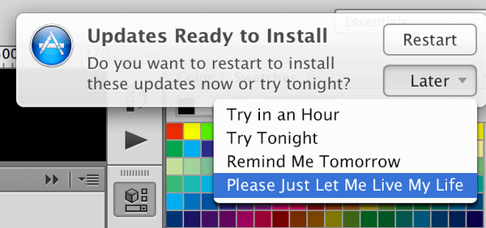

Nagging
Een kleine afwijking van de verwachte functionaliteit die mogelijk aanhoudt gedurende één of meerdere
interacties. Zeuren manifesteert zich vaak als een herhaalde onderbreking tijdens normale interactie,
waarbij de gewenste taak van de gebruiker één of meerdere keren wordt onderbroken door andere taken die
niet direct verband houden met waar de gebruiker zich op richt.
Voorbeeld nagging
